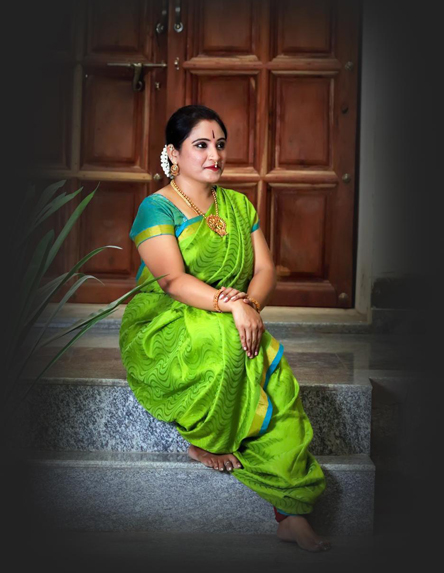

About Chetana Natya Niketana
"Chetana Natya Niketana" School of Bhartanatyam is a leading dance institute in Bangalore. The renowned dance teachers Smt. Chetana Sundaresh founded "Chetana Natya Niketana" in 1999 with the aim of promoting the rich art and cultural heritage of India. It fulfills this aim through proper and intensive training of young talents, thereby bringing the essence of Bharatanatyam style of Classical Dance. "Chetana Natya Niketana" has also been working for the purpose of the cultural upliftment of classical dance of India.
Motto of CNN is to enrich the art in the field of:
- Bharathanatyam
- Carnatic Vocal
- Veena
- Mrudangam
- Key Board
About Smt. Chetanasundaresh
Smt. Chetanasundaresh was born in 1977 at Mysore to Smt. Sumithra & Sri Parameshwarachar. She started her Bharathanatyam career right from the age of five under the guidance of guru Smt. Ushadatar. Further she completed her higher grade education in Bharathanatyam under the guidance of guru Sri Rajudatar & guru Smt. Narmada. She has completed her junior , Senior & also Vidwat board Examination.She has also done her professional education in the field of Carnatic vocal, Veena & Keyboard under the guidance of guru Sri Chandrashekar. Further she dedicated her life in training & spreading the talented traditional art to the young minds at the age of 20. This interest made her to establish a institution namely CNN in the year 1999. She is training the students to appear for junior, senior & vidwat board examination.
Where all CNN students have performed?
- "Doordarshan Chandana Channel"
- "Iskcon heritage fest"
- "Udupi Sri Krishna Temple"
- "Raghavendra Aradhane, Mysore"
- "World's Dance Day"
- "Gurvayur Temple, Kerala"
- "500th Hampi Utsava, Hampi"
- "Golden Temple, Vellore"
- "Kaiwara Utsava, Chinthamani" etc.
Some of these are:
"Hampu Utsava", "Udupi", "Isckon Heritage", "Worlds Dance Day" etc. Totally 113 stage performances.
